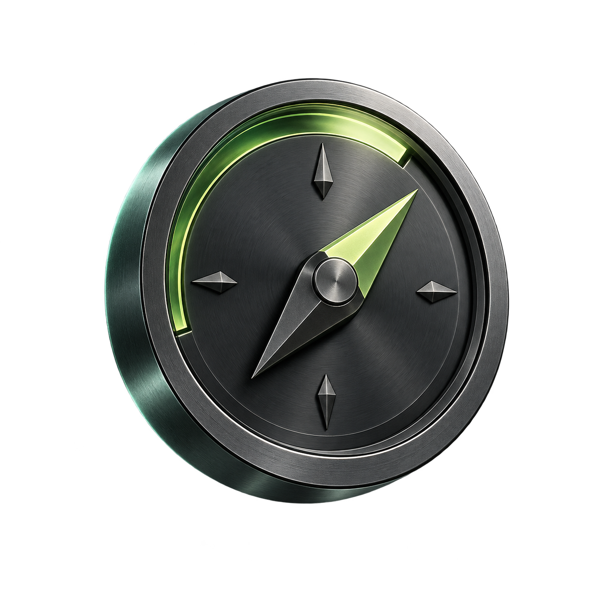

총 자산
연결 중
—
서버에서 정보를 불러오고 있어요
자산 기록이 쌓이면 흐름을 보여드릴게요.
COINPILOT · 자산 브리핑

자산 기록이 쌓이면 흐름을 보여드릴게요.
MARKET WATCH
ENGINE STATUS
RECENT ACTIVITY
서버 기록을 불러오고 있어요.
YOUR PORTFOLIO
서버에서 받은 현재 계좌와 보유 내역입니다.
CASH
OPEN POSITIONS
보유 정보를 불러오고 있어요.
평가액과 손익은 서버가 제공한 값입니다. 일부 관찰 계좌에서는 평가 정보를 제공하지 않을 수 있습니다.
ACCOUNT ACTIVITY
서버에 저장된 최근 거래 기록을 확인합니다.
기록을 불러오고 있어요.
이 화면은 서버의 거래 기록을 표시합니다. 거래소 체결·정산 내역을 대신하지 않습니다.
APP & CONNECTION
화면 연결과 서버 상태를 확인합니다.
SERVER
ABOUT
앱을 닫아도 자동매매 엔진은 서버에서 계속 동작합니다. iOS 앱은 계좌를 확인하는 화면이며 백그라운드에서 거래 엔진을 실행하지 않습니다.
개인 API 키와 자동매매 설정은 서버에 보관됩니다.